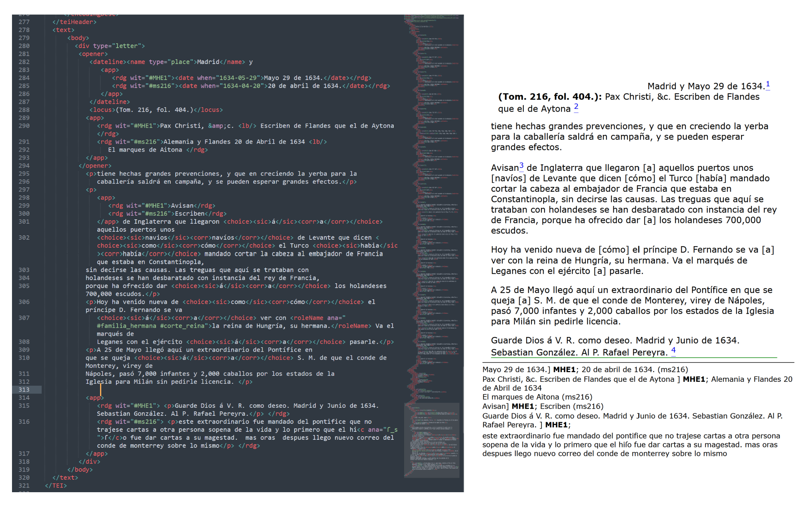
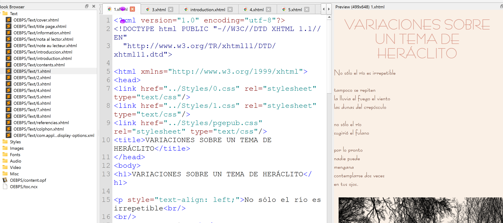

Ingénierie des Données & XML-TEI
La structuration sémantique et la gestion rigoureuse des données de la recherche sont des compétences fondamentales pour l'édition scientifique contemporaine. Ma double compétence me permet de faire le pont entre le contenu académique brut et sa valorisation numérique selon les standards de la Science ouverte.
Structuration Sémantique & Édition Numérique (XML, HTML, XHTML)
L'édition numérique scientifique exige un encodage rigoureux, capable de relier la donnée brute à sa diffusion publique. Mes réalisations illustrent la maîtrise technique de cet écosystème :
- XML-TEI & Apparat critique (XML-TEI et HTML) : Encodage structuré d'un apparat critique en XML-TEI et sa transformation directe en HTML pour une consultation web interactive. Ce projet démontre ma capacité à traiter des textes académiques complexes et à les rendre accessibles.
- Code ePub & XHTML (Pédagogie) : Conception de A à Z d'un livre numérique (format ePub) compilant une anthologie poétique (Mario Benedetti). La manipulation directe du code XHTML de ce projet m'a servi de support pédagogique pour enseigner la création d'eBooks à mes étudiants, alliant ainsi pratique technique et transmission des savoirs.

Encodage XML-TEI / Transformation HTML

Structure XHTML / ePub pédagogique